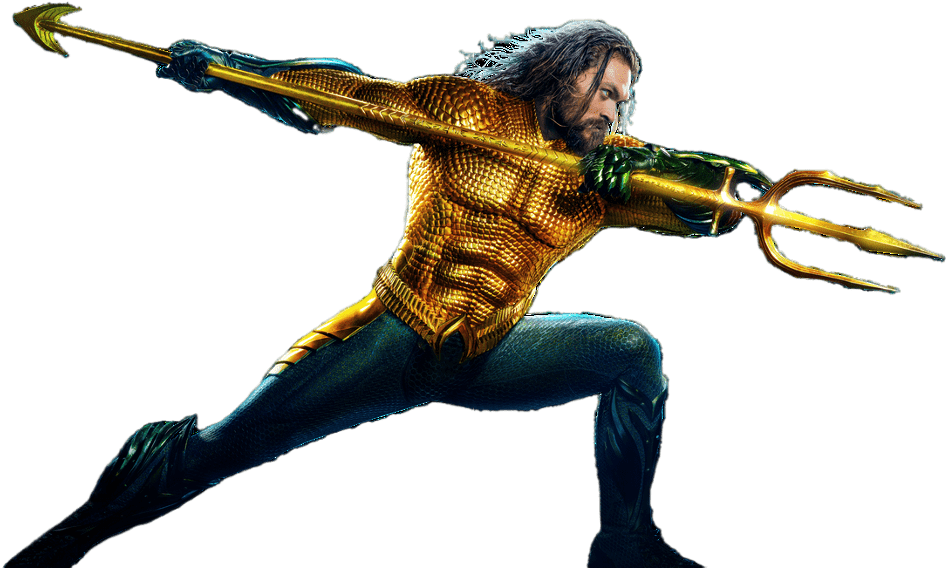
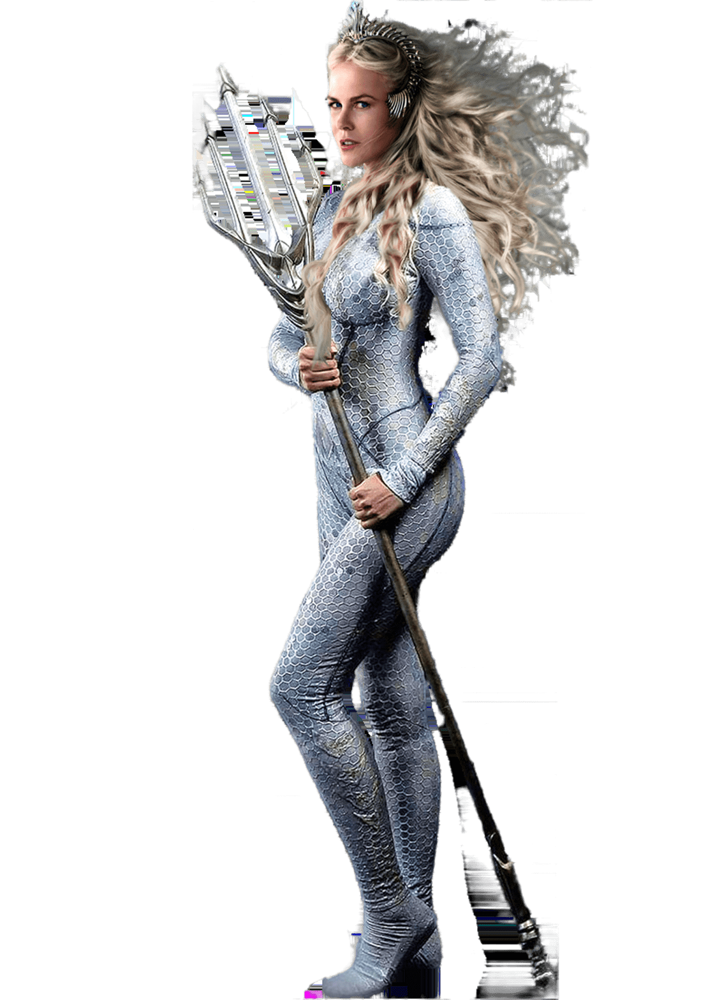

Aquaman is a superhero appearing in American comic books published by DC Comics. Created by Paul Norris and Mort Weisinger, the character debuted in More Fun Comics #73 (November 1941). Initially a backup feature in DC's anthology titles, Aquaman later starred in several volumes of a solo comic book series. During the late 1950s and 1960s superhero-revival period known as the Silver Age, he was a founding member of the Justice League. In the 1990s Modern Age, writers interpreted Aquaman's character more seriously, with storylines depicting the weight of his role as king of Atlantis. The son of a human lighthouse-keeper and the queen of Atlantis, Aquaman is the alias of Arthur Curry, who also goes by the Atlantean name Orin. Others to use the title of Aquaman include a short-lived human successor, Joseph Curry; his protégé Jackson Hyde; and the mysterious Adam Waterman, who was briefly active during World War II. Aquaman's comic books are filled with colourful undersea characters and a rich supporting cast, including his mentor Vulko, his powerful wife Mera, and various sidekicks such as Aqualad, Aquagirl, and Dolphin. Aquaman stories tend to blend high fantasy and science fiction. His villains include his archenemy Black Manta and his own half-brother Ocean Master, among others.  The character's original 1960s animated appearances left a lasting impression, making Aquaman widely recognized in popular culture and one of the world's most recognized superheroes. Jokes about his wholesome, weak portrayal in Super Friends and perceived feeble powers and abilities have been staples of comedy programs and stand-up routines, leading DC at several times to attempt to make the character edgier or more powerful in the comic books. Modern comic book depictions have attempted to reconcile these various aspects of his public perception, with many versions often casting Aquaman as serious and brooding, weighed down by his public reputation, his responsibilities as king, and the complex world of Atlantean politics. Aquaman has been featured in several adaptations, first appearing in animated form in the 1967 The Superman/Aquaman Hour of Adventure and then in the related Super Friends program. Since then he has appeared in various animated productions, including prominent roles in the 2000s series Justice League and Justice League Unlimited and Batman: The Brave and the Bold, as well as several DC Universe Animated Original Movies. Actor Alan Ritchson also portrayed the character in the live action television show Smallville. In the DC Extended Universe, actor Jason Momoa portrays the character in the films Batman v Superman: Dawn of Justice, Justice League and its director's cut Zack Snyder's Justice League, Aquaman, the HBO Max series Peacemaker, and the upcoming Aquaman and the Lost Kingdom.

Mera is a fictional superheroine and warrior appearing in American comic books published by DC Comics. Created by Jack Miller and Nick Cardy, the character first appeared in Aquaman #11 (September 1963). Originally portrayed as a supporting character to her husband, the superhero Aquaman, possessing the formidable hydrokinetic power to create and control water, modern writers have given greater emphasis to her superhuman physical strength. Mera has been depicted as a member of DC Comics' flagship superhero team, the Justice League. Queen Mera's earlier storylines have also portrayed her mental breakdown, as she was faced with crippling loss. The stories explored her attempts at coping with lasting anger and rage. More recent storylines have explored her approach to rulership in comparison to her husband. The character has been adapted substantially in various media, she was played by Elena Satine on Smallville and most notably featured in the DC Extended Universe where Amber Heard portrayed Mera in Justice League and its director's cut, reprised the role in Aquaman and will return in Aquaman and the Lost Kingdom. The character has also been adapted in the animated Young Justice television series. Mera is the former Queen of Dimension Aqua, Queen of Atlantis, and wife of DC Comics superhero Aquaman. Mera also has a twin sister named Hila. In her first chronological appearance, Mera is shown to be fleeing the criminal Leron, who seized control of her kingdom, when she arrives on Earth and meets Aquaman and Aqualad, who vows to help her. Leron captures them, imprisoning Aquaman and Mera in Dimension Aqua. Aided by the water spirit known as Quisp, Aquaman manages to free Mera and defeats Leron. Mera abdicates the throne of Xebel to Queen V'lana and returns to Atlantis to marry Aquaman. Soon after, they had a son named Arthur Curry, Jr., also known as Aquababy. A few years later, Black Manta kidnapped Aquababy and trapped him inside a translucent tank designed to suffocate him.[11] Vulko sends Mera, desperate to save her son, on an ambitious crusade to her homeworld to find the scientist Xebel, who has the components for a special healing device that could save her son. When she arrives, she discovers that her kingdom has been taken over by the traitorous Leron, who has taken Xebel hostage, casting him and the artifacts into the Great Pit. Mera braves the pit and defeats Leron and his elemental monsters to retrieve the device. Sadly, she returns to Atlantis too late, finding her son dead.
Atlanna is the mother of both Arthur Curry and Orm Marius, and the former queen of the underwater kingdom of Atlantis. Upon fleeing from an arranged marriage with King Orvax decades ago, Atlanna met and fell in love with Thomas Curry, whom she married later. A few years following Arthur's birth, Atlanna was forced to return to Atlantis and marry Orvax when several Atlantean soldiers attempted to violently take her back under his orders. However, several years after she gave birth to her second son Orm and took in Princess Mera of Xebel as her protégé, Orvax learned of Arthur's existence, leading him to disown her as his wife and sentence her to the Trench for loving a human. Despite the odds, Atlanna was able to fight her way through the Trench and make it all the way to the Hidden Sea within the Earth's core. After living there alone for 20 years, Atlanna was reunited with Arthur and Mera when they came to the Hidden Sea to find Atlan's Trident. Once Arthur retrieved the Trident and defeated Orm, Atlanna returned to Maine to be with Thomas. When Mera and Aquaman were swept apart by the maelstrom, Atlanna saved Mera from being devoured by a sea monster. Recognizing Mera, Atlanna removed her helmet, shocking Mera to see her former queen alive. Arthur approached the two and is shocked to see his mother alive and well. Atlanna and Arthur happily embraced each other as they're finally reunited after years of separation. Atlanna explained how she managed to survive her death sentence and remained trapped in the lost kingdom for years. She told Arthur not to blame himself for her situation as she made a choice to protect him and his father. When she asked about Thomas, Atlanna is moved when her son explained that his father walked to the pier and waited for her every day for the past years. Atlanna then told Aquaman what he needs to do to retrieve Atlan's trident and watched her son go through the waterfall to retrieve it. He eventually succeeded in retrieving the trident, wearing new Atleanean armor as she proudly called Arthur the true king of Atlantis.